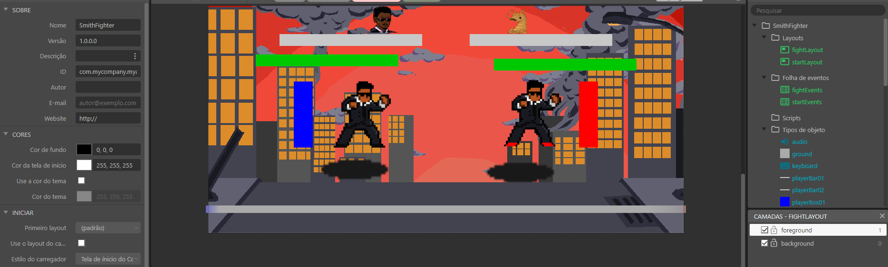
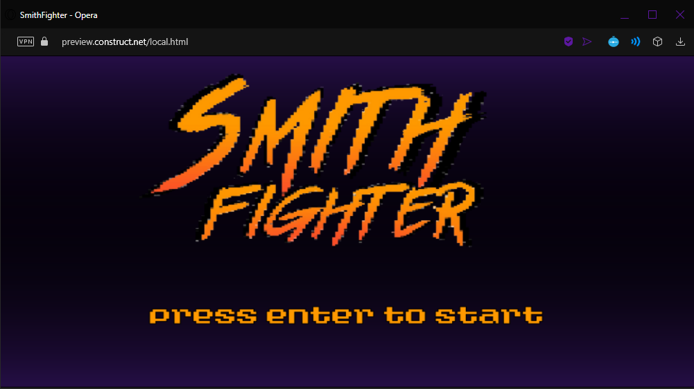
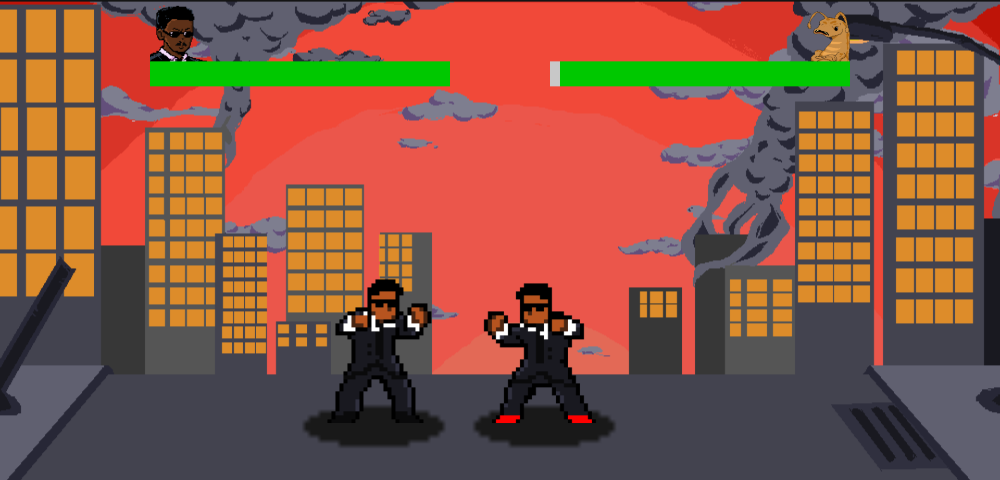
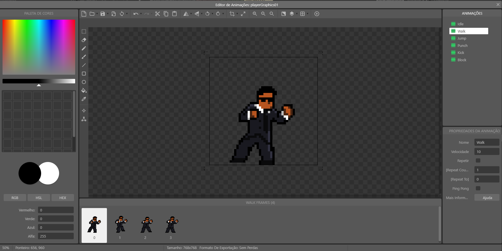
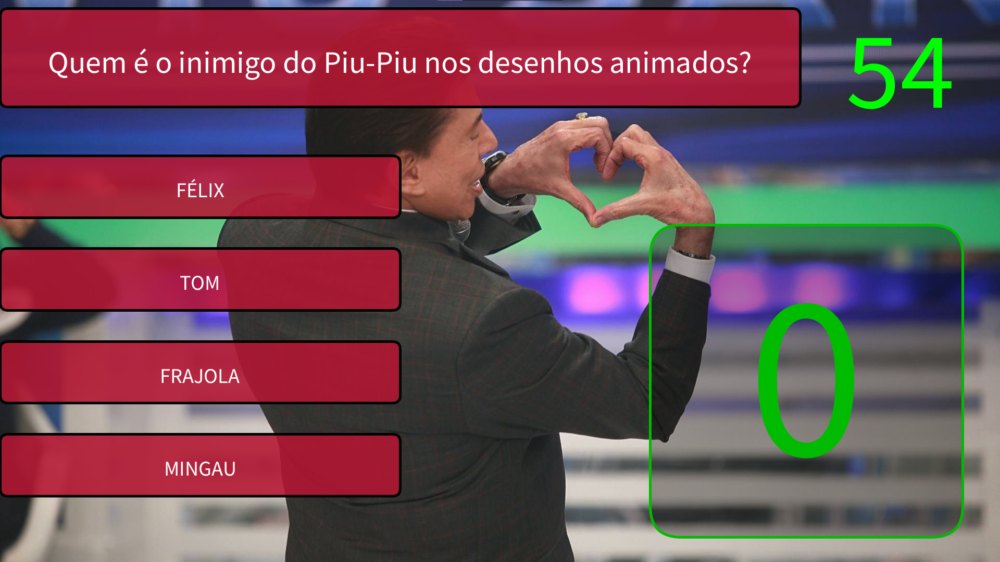
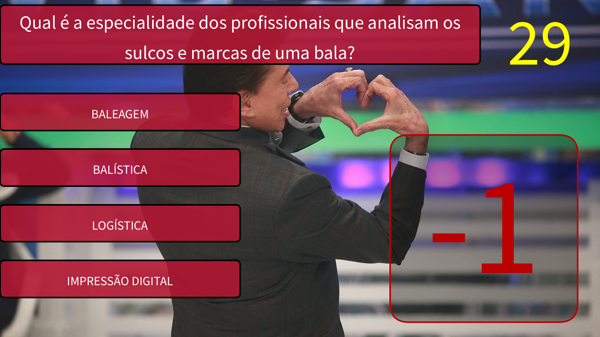
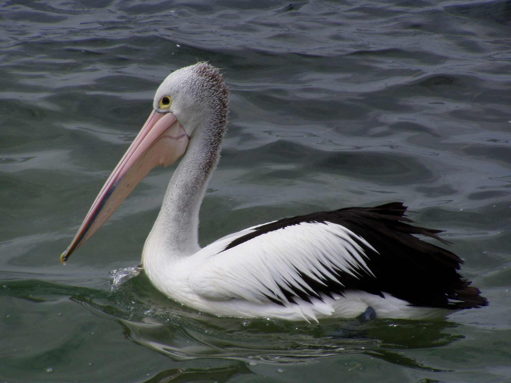
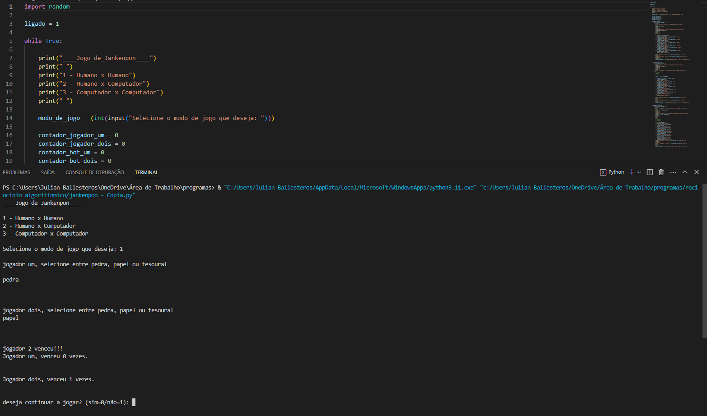

No primeiro período da faculdade já realizei alguns projetos solicitados em aula. O objetivo desse site é simplesmente mostrar quais foram esses projetos e minha paricipação neles.
Smith Fighters é um jogo de luta, onde a ideia principal foi fazer um jogo do Will Smith lutando contra outras versões de si mesmo. Devido ao despreparo, ambiciosidade e algumas limitações da própria engine usada não foi possível realizar tudo o que o grupo sonhou para o projeto. Breve adendo sobre esse projeto em específico é que tirando pela tela de inicio, todas as artes foram feitas por mim.
   Uma recriação do Jogo do Milhão. Nosso grupo decidiu então recriar a nossa versão do famoso jogo popularizado na televisão brasileira pelo apresentador Silvio Santos. O jogo consiste de diversas perguntas que são respondidas pelo participante, quem respondesse todas as perguntas corretamente levava um milhão de reais para casa, em nossa versão apenas um muito obrigado.
 Bem, de certa forma esse site é também fruto do projeto 3. O projeto 3 foi a criação de um site em conjunto com a sala, cada um teve sua parte na construção do site e cada grupo teve a função de criar uma área de interresse. O site se trata sobre algumas informações em relação ao municipio de Curitiba
Através do projeto, de outra matéria, tive a oportunidade de criar minha versão de um jogo de jankenpon/pedra, papel e tesoura. Criado em python, sem uma interface gráfica além do próprio terminal de comando, o jogo funciona adequadamente, contém todas as características normais e conta com 3 tipos de modo de jogo [player x player; player x máquina; máquina x máquina].
eis aqui os links para acessar os projetos: